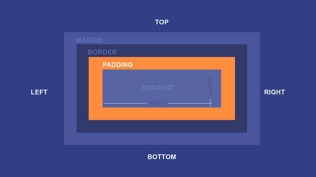

Margin и Padding в CSS
12 Октября, 2024
Внутренние и внешние отступы в CSS
Лекция от HTMLAcademy про margin и padding в css
Свойство padding
Внутренний отступ — это пространство между содержимым элемента и его границей (рамкой).
Внутренние отступы элемента задаются с использованием свойства padding. Если отступы одинаковы со всех сторон, можно просто указать:
.main__content {
padding: 15px;
}
Такой способ записи называется сокращённым.
Если отступы на разных сторонах отличаются, используют полную запись, где указывают внутренний отступ для каждой стороны отдельно:
.main__content {
padding-top: 5px;
padding-right: 10px;
padding-bottom: 15px;
padding-left: 20px;
}
Свойство padding-top добавляет внутренний отступ сверху, padding-right — справа, padding-bottom — снизу, а padding-left — слева.
Свойство margin
Внешний отступ — это пространство между внешней границей элемента и границами его родительского элемента или соседних элементов.
Для управления внешними отступами используется свойство margin. Оно, как и padding, поддерживает как краткую, так и полную запись.
// Краткая запись
margin: 20px;
// Полная запись
margin-top: 0;
margin-right: 5px;
margin-bottom: 10px;
margin-left: 15px;
Свойство margin-top создаёт внешний отступ сверху, margin-right — справа, margin-bottom — снизу, а margin-left — слева.